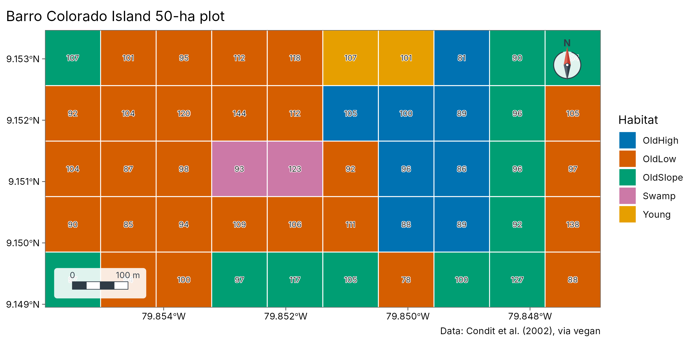
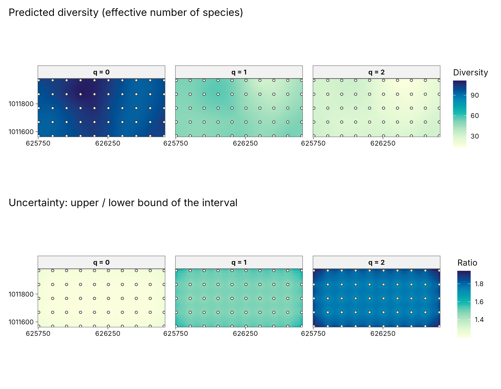
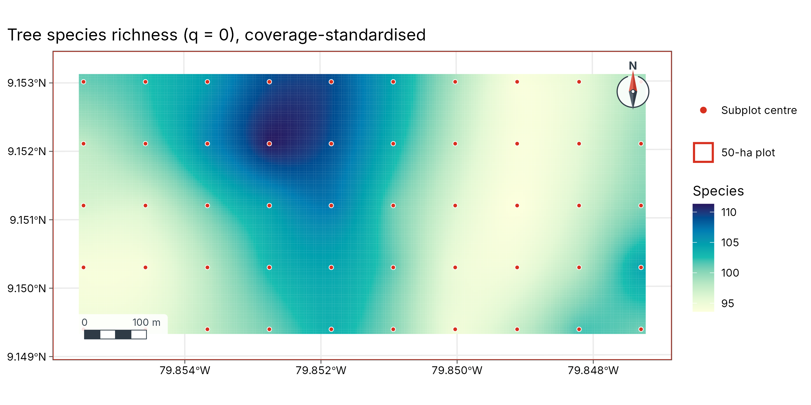

Case study: tree diversity across Barro Colorado Island
case-bci-diversity.RmdThe 50-hectare forest dynamics plot on Barro Colorado Island, Panama, is one of the best-studied tropical forests on Earth. Every tree of at least 10 cm diameter was counted in fifty 1-hectare subplots (Condit et al. 2002; shipped with the vegan package). This case study asks where in the plot tree diversity is high or low, and how sure we can be, combining tidydiversity with tidymapr.
Data
e <- new.env()
utils::data(BCI, BCI.env, package = "vegan", envir = e)
trees <- tibble::tibble(
plot = rep(sprintf("P%02d", 1:50), ncol(e$BCI)),
species = rep(colnames(e$BCI), each = 50),
n = as.vector(as.matrix(e$BCI))
) |>
filter(n > 0)
plots <- tibble::tibble(
plot = sprintf("P%02d", 1:50),
x = e$BCI.env$UTM.EW, y = e$BCI.env$UTM.NS,
habitat = e$BCI.env$Habitat
)
trees
#> # A tibble: 4,539 × 3
#> plot species n
#> <chr> <chr> <int>
#> 1 P10 Abarema.macradenia 1
#> 2 P28 Vachellia.melanoceras 2
#> 3 P32 Vachellia.melanoceras 1
#> 4 P34 Acalypha.diversifolia 1
#> 5 P40 Acalypha.diversifolia 1
#> 6 P28 Acalypha.macrostachya 1
#> 7 P04 Adelia.triloba 3
#> 8 P05 Adelia.triloba 1
#> 9 P09 Adelia.triloba 5
#> 10 P12 Adelia.triloba 1
#> # ℹ 4,529 more rowsDiversity per subplot
tidydiversity estimates Hill numbers of order q = 0, 1 and 2 (species richness, the exponential of Shannon entropy and inverse Simpson), standardised to the same sample coverage so that subplots can be compared.
div <- div_standardise(trees, site = plot, species = species, abundance = n, q = c(0, 1, 2), nboot = 0)
div
#> # A tibble: 150 × 9
#> plot q m method coverage diversity se lower upper
#> <chr> <dbl> <dbl> <chr> <dbl> <dbl> <dbl> <dbl> <dbl>
#> 1 P10 0 583. extrapolation 0.940 101. NA NA NA
#> 2 P10 1 583. extrapolation 0.940 50.2 NA NA NA
#> 3 P10 2 583. extrapolation 0.940 30.1 NA NA NA
#> 4 P28 0 483. extrapolation 0.940 91.7 NA NA NA
#> 5 P28 1 483. extrapolation 0.940 41.6 NA NA NA
#> 6 P28 2 483. extrapolation 0.940 20.2 NA NA NA
#> 7 P32 0 451. rarefaction 0.940 87.5 NA NA NA
#> 8 P32 1 451. rarefaction 0.940 43.9 NA NA NA
#> 9 P32 2 451. rarefaction 0.940 23.0 NA NA NA
#> 10 P34 0 567. extrapolation 0.940 100. NA NA NA
#> # ℹ 140 more rowsThe plot and its habitats
Each 1-ha subplot drawn as a square, coloured by habitat, with its richness written on it.
squares <- sf::st_as_sf(plots, coords = c("x", "y"), crs = 32617) |>
sf::st_buffer(50, endCapStyle = "SQUARE")
rich <- div |> filter(q == 0) |> select(plot, richness = diversity)
squares <- left_join(squares, rich, by = "plot")
squares$label <- round(squares$richness)
geo_map(title = "Barro Colorado Island 50-ha plot", caption = "Data: Condit et al. (2002), via vegan") |>
map_polygons(squares, fill = habitat, group = "Habitat", border = "white", linewidth = 0.4) |>
map_labels(squares, text = label, size = 2.6)
A diversity surface with its uncertainty
geo_diversity_surface() turns the subplot estimates into
continuous maps by kriging on the log scale, taking each subplot’s own
estimation error into account (bootstrap standard errors), and maps the
width of the interval alongside.
set.seed(1)
surf <- geo_diversity_surface(trees, plot, species, n,
sites = plots, lon = x, lat = y, crs = 32617, grid = 60, nboot = 50
)
plot_diversity_surface(surf)
How to read the uncertainty maps. Each subplot’s diversity is an estimate, not an exact count, so every point on the surface comes with a 95% interval: the range the true value very probably lies in. The lower row maps how wide that interval is, as the upper bound divided by the lower bound. A ratio of 1.4 means the true value could be up to 40% higher than the low end of the range; a ratio of 1.8 means up to 80%. Pale areas are estimated precisely; dark areas are uncertain, so differences there should be read with caution. Uncertainty grows from q = 0 to q = 2 here because inverse Simpson depends on the few commonest species, whose share varies more from plot to plot.
Richness as a layered map
centres <- sf::st_as_sf(plots, coords = c("x", "y"), crs = 32617)
outline <- sf::st_as_sf(sf::st_union(squares))
geo_map(title = "Tree species richness (q = 0), coverage-standardised") |>
map_raster(surf[["q0"]], name = "Species", palette = "YlGnBu") |>
map_polygons(outline, fill = NA, preset = "study_area", label = "50-ha plot") |>
map_points(centres, preset = "sample_site", label = "Subplot centre", size = 1.4)
Is diversity clustered?
Moran’s I on the subplot richness, and local hot and cold spots.
pts <- sf::st_transform(centres, 4326) |> left_join(rich, by = "plot")
xy <- sf::st_coordinates(pts)
pts_df <- tibble::tibble(plot = pts$plot, richness = pts$richness, lon = xy[, 1], lat = xy[, 2])
geo_moran(pts_df, richness, lon, lat)
#> # A tibble: 1 × 7
#> statistic expectation variance p.value n nperm method
#> <dbl> <dbl> <dbl> <dbl> <int> <dbl> <chr>
#> 1 0.0135 -0.0204 0.000349 0.051 50 999 Moran's I (inverse-distanc…
geo_hotspot(pts_df, richness, k = 4) |> count(hotspot)
#> # A tibble: 2 × 2
#> hotspot n
#> <fct> <int>
#> 1 hot 6
#> 2 not significant 44